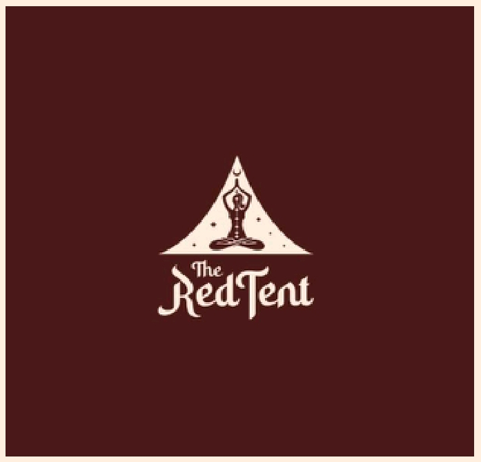
The Red Tent
О Red Tent:
Red Tent — это первая в Азербайджане студия женских практик и саморазвития. Это место, где йога встречается с творчеством
и глубокой работой над собой. Мы создали пространство, которое позволяет
женщинам полностью раскрыться через самые разные форматы.
Red Tent — это не просто студия, это твой личный эпицентр вдохновения, знаний и поддержки в кругу единомышленниц.
Red Tent — это не просто студия, это твой личный эпицентр вдохновения, знаний и поддержки в кругу единомышленниц.
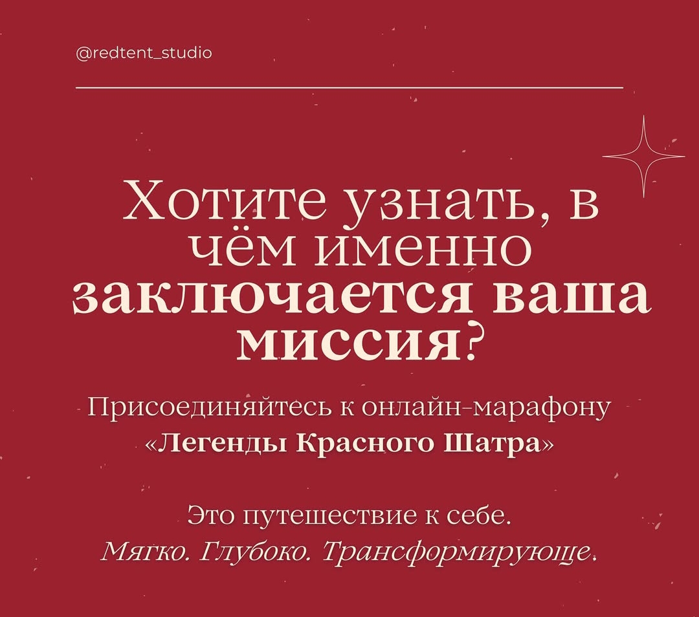
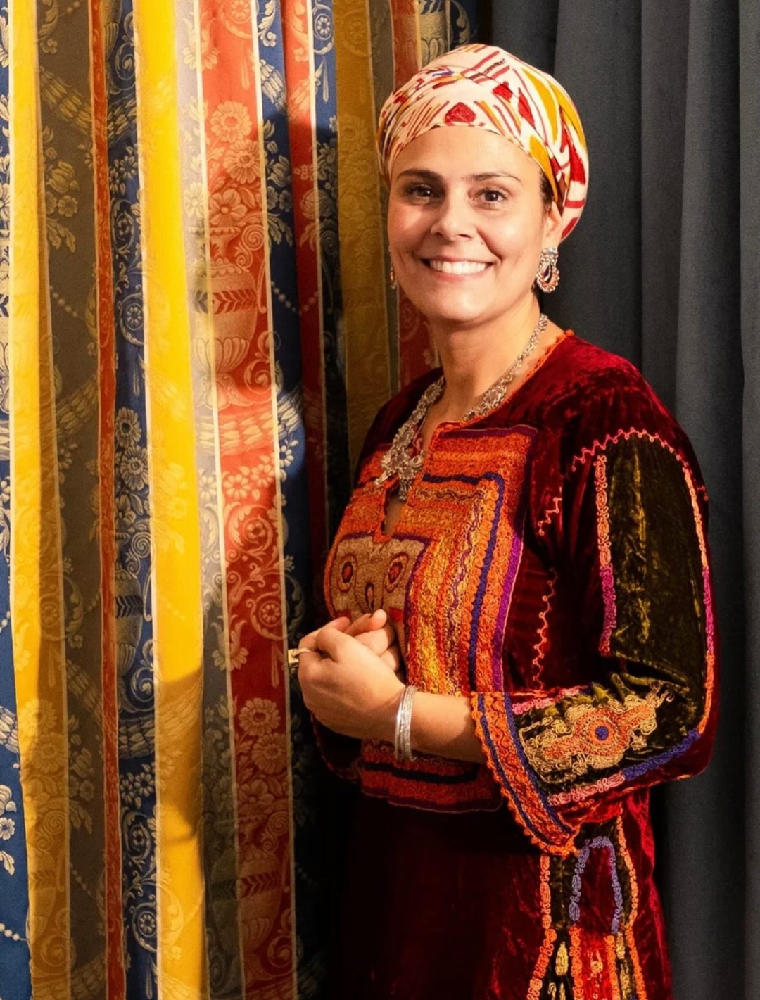
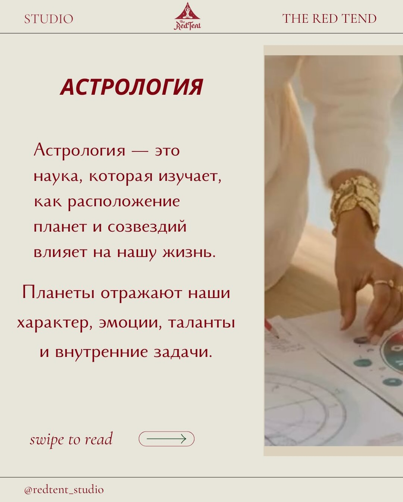
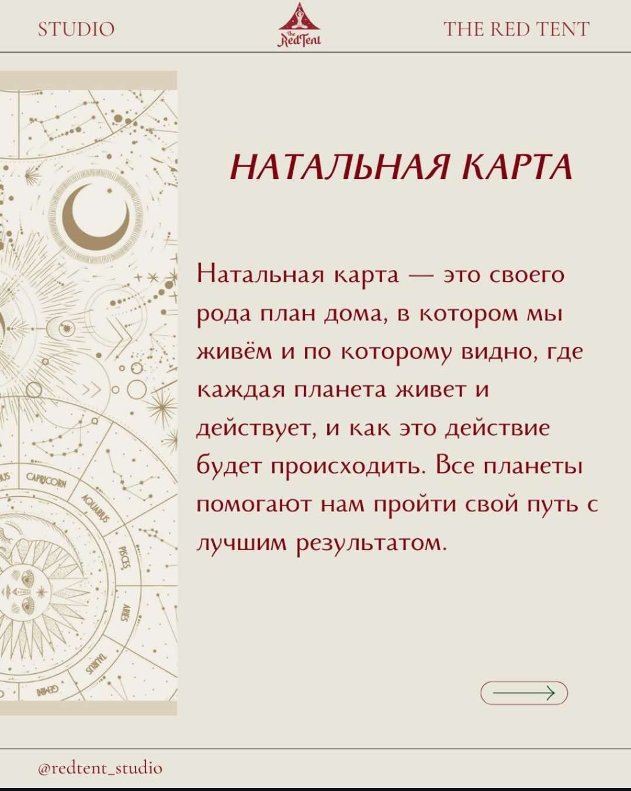
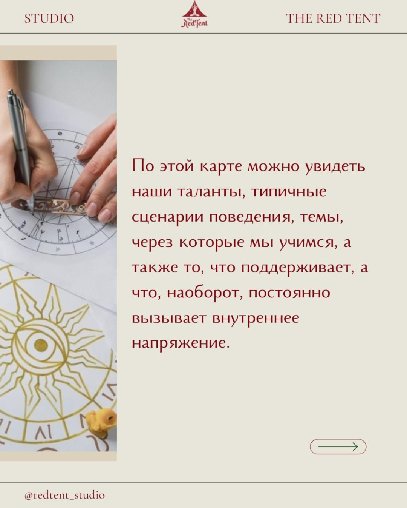
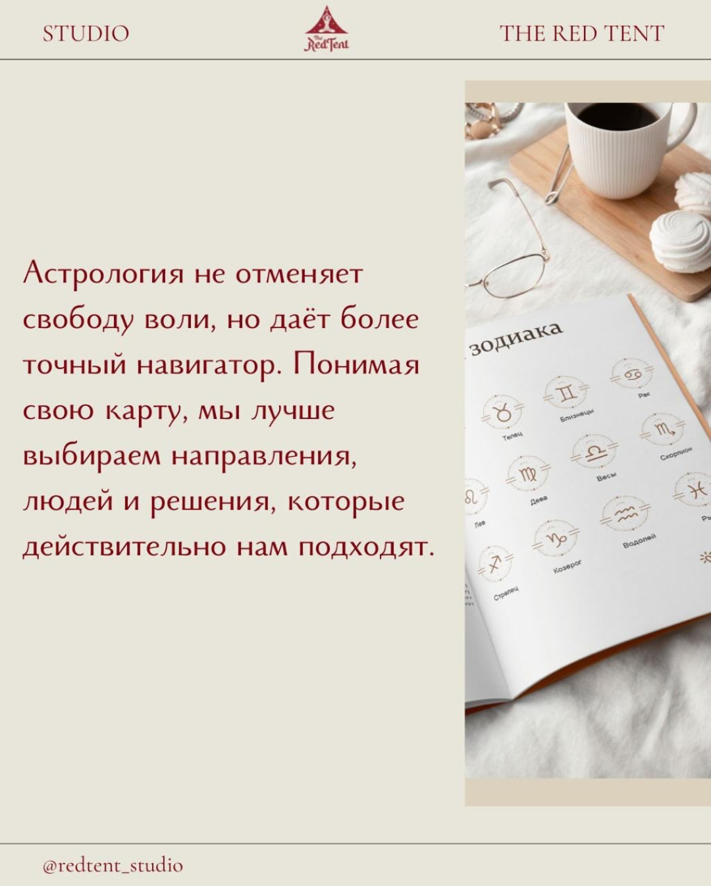
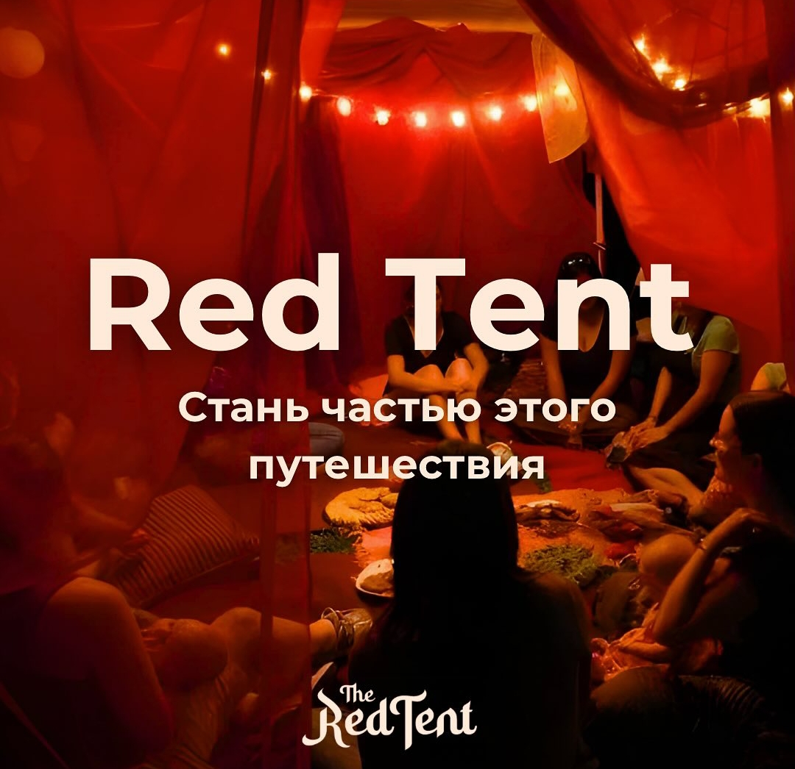
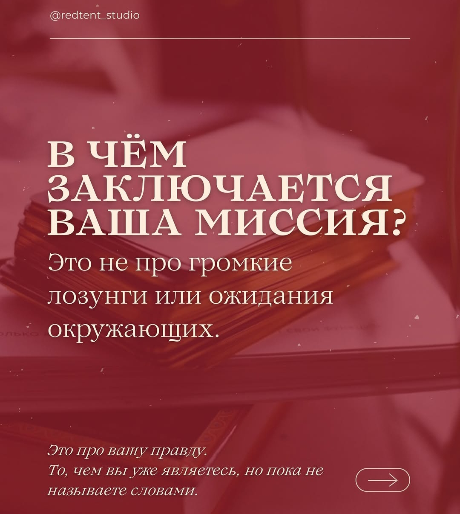
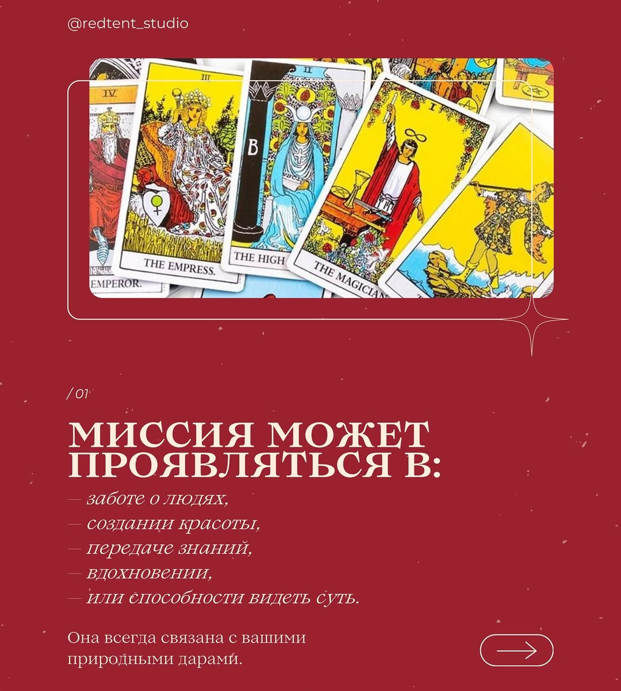
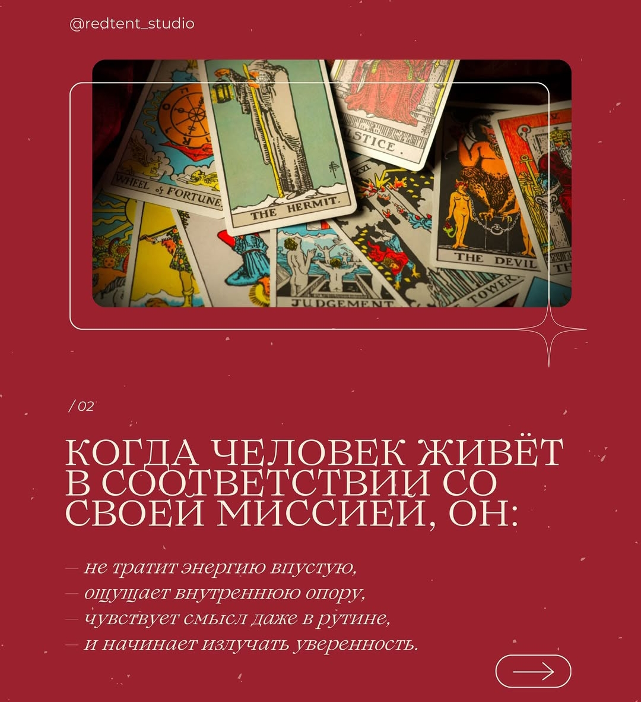
Цитаты дня
Наши услуги ▼
Раздел: Йога ▶
Индивидуальные классы КЙ:
Для каждого ученика разрабатывается индивидуальная программа занятий, учитывая физическую подготовку и расчёты по тантрической нумерологии. Мы будем практиковать комплексы Кундалини йоги 40 дней, включая домашние задания. За это время укрепляются нервная, эндокринная и дыхательные системы, очищается тело от токсинов и восстанавливается баланс между телом и эмоциями.
Продолжительность урока: 1 час — 1 час 15 минут.
Цены:
• 1 человек — 300 АЗН
• 2 человека — по 200 АЗН
Для каждого ученика разрабатывается индивидуальная программа занятий, учитывая физическую подготовку и расчёты по тантрической нумерологии. Мы будем практиковать комплексы Кундалини йоги 40 дней, включая домашние задания. За это время укрепляются нервная, эндокринная и дыхательные системы, очищается тело от токсинов и восстанавливается баланс между телом и эмоциями.
Продолжительность урока: 1 час — 1 час 15 минут.
Цены:
• 1 человек — 300 АЗН
• 2 человека — по 200 АЗН
Раздел: Астрология ▶
▫️ Детская астопсихология: 1 ребёнок — 1,5 часа — 130 АЗН
▫️ Соляр (персональный гороскоп на год):
Гороскоп на год даёт рекомендации, как провести 12 дней после дня рождения, чтобы весь год был удачным. Это время для того, чтобы стать лучшей версией себя, принять прошлое, насладиться настоящим и смотреть в будущее с надеждой.
Продолжительность: 1,5 часа — 150 АЗН + астро планирование (100 АЗН) - 200 АЗН 2.30 часа
▫️ Родовой гороскоп: Баресма — Анализ родовой линии, её влияния на вашу жизнь.
Продолжительность: 1,5 часа — 150 АЗН
▫️ Соляр (персональный гороскоп на год):
Гороскоп на год даёт рекомендации, как провести 12 дней после дня рождения, чтобы весь год был удачным. Это время для того, чтобы стать лучшей версией себя, принять прошлое, насладиться настоящим и смотреть в будущее с надеждой.
Продолжительность: 1,5 часа — 150 АЗН + астро планирование (100 АЗН) - 200 АЗН 2.30 часа
▫️ Родовой гороскоп: Баресма — Анализ родовой линии, её влияния на вашу жизнь.
Продолжительность: 1,5 часа — 150 АЗН
Раздел: Коучинг ▶
Архетипический портрет личности:
Индивидуальный портрет, который помогает проанализировать личность, её потенциал, таланты и возможности. Позволяет выявить скрытые страхи и блокировки в подсознании. Также можно определить, в каких условиях человек чувствует себя комфортно, а какие ситуации неприемлемы.
Цены:
• Архетипический портрет — 150 АЗН
▫️ Теневой портрет:
Теневой портрет раскрывает скрытые аспекты личности, которые человек вытесняет из сознания, часто воспринимая их как негативные или грешные.
Цены: • Теневой портрет — 150 АЗН
▫️ Комплексно 2 портрета:
(например: кармический+теневой)
Цены: • 2 портрета — 200 АЗН
▫️ Комплексно 3 портрета:
(кармический+теневой+архетипический)
Цены: • 3 портрета — 300 АЗН
▫️ Совместимость с другим человеком:
Анализ отношений между людьми, будь то профессиональные, деловые, любовные или семейные. Метод помогает понять, что связывает или разделяет двух людей.
Цены: • Совместимость — 300 АЗН
▫️ Арт-терапия:
Арт-терапия с использованием рисуночных техник помогает выражать эмоциональное состояние, идеально подходит для работы с детьми, подростками и для проработки отношений родителей и детей.
Цены: • Индивидуальное занятие — 100 АЗН • Групповое занятие (минимум 4 человека) — 50 АЗН
▫️ Метафорические карты (индивидуально):
Метафорические карты помогают погрузиться в бессознательное, выявить проблемы, переживания, а также разобраться с мечтами и получить ответы на важные вопросы.
Цены: • 1 человек — 1,5 часа — 80 АЗН
Индивидуальный портрет, который помогает проанализировать личность, её потенциал, таланты и возможности. Позволяет выявить скрытые страхи и блокировки в подсознании. Также можно определить, в каких условиях человек чувствует себя комфортно, а какие ситуации неприемлемы.
Цены:
• Архетипический портрет — 150 АЗН
▫️ Теневой портрет:
Теневой портрет раскрывает скрытые аспекты личности, которые человек вытесняет из сознания, часто воспринимая их как негативные или грешные.
Цены: • Теневой портрет — 150 АЗН
▫️ Комплексно 2 портрета:
(например: кармический+теневой)
Цены: • 2 портрета — 200 АЗН
▫️ Комплексно 3 портрета:
(кармический+теневой+архетипический)
Цены: • 3 портрета — 300 АЗН
▫️ Совместимость с другим человеком:
Анализ отношений между людьми, будь то профессиональные, деловые, любовные или семейные. Метод помогает понять, что связывает или разделяет двух людей.
Цены: • Совместимость — 300 АЗН
▫️ Арт-терапия:
Арт-терапия с использованием рисуночных техник помогает выражать эмоциональное состояние, идеально подходит для работы с детьми, подростками и для проработки отношений родителей и детей.
Цены: • Индивидуальное занятие — 100 АЗН • Групповое занятие (минимум 4 человека) — 50 АЗН
▫️ Метафорические карты (индивидуально):
Метафорические карты помогают погрузиться в бессознательное, выявить проблемы, переживания, а также разобраться с мечтами и получить ответы на важные вопросы.
Цены: • 1 человек — 1,5 часа — 80 АЗН
Раздел: Игры ▶
▫️ Игра «Красный Шатер»:
Индивидуально:
1 этап (любой) — 80 АЗН
4 этапа сразу — 200 АЗН
Групповая игра (3 человека):
1 этап (любой) — 130 АЗН за группу
4 этапа сразу — 400 АЗН за группу
Индивидуально:
1 этап (любой) — 80 АЗН
4 этапа сразу — 200 АЗН
Групповая игра (3 человека):
1 этап (любой) — 130 АЗН за группу
4 этапа сразу — 400 АЗН за группу
Раздел: НЛП ▶
▫️ Техники избавления от страхов, неправильных установок, ограничивающих убеждений и повторяющихся шаблонов и сценариев — 50 АЗН за 1 технику во время сессии